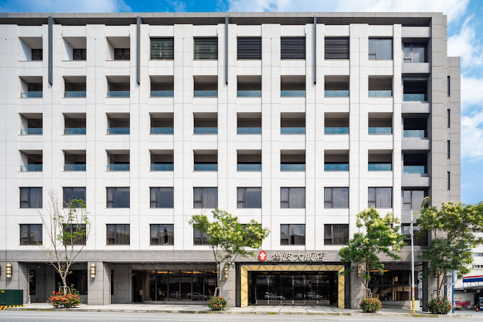

(sebuah ulasan)

Nama hotel= Lakeshore
Alamat= no.142, jalan Zhongmei, kota Hualien, Taiwan 970
Tahun berdiri= 2011
No.telepon= 886-3-8222666
Alamat website= lakeshore.com
Kelas bintang= 4,4
Tipe kamar yang diulas= triple room
Durasi menginap= 3 malam
Nama pemilik= Lakeshore International Group
Hualien adalah kota kabupaten di negara Taiwan. Kota yang terletak di pantai timur yang menghadap samudra pasifik. Kota ini memiliki destinasi yang cukup banyak dan destinasi alam. Hualien menjadi tempat yang destinasi alam, juga terdapat destinasi aktivitas, budaya dan wisata malam. Hotel andalan yang menyediakan tempat untuk menginap di Hualien yang berdekatan dengan pom bensin CPC, kafe The Amos dan hotel Guan Lu. seperti apakah hotel tersebut?
Lakeshore hotel Hualien adalah hotel berbintang empat yang berlokasi di pusat kota Meilun, menghadap ke samudra pasifik yang luas di sebelah timur dan perbukitan hijau di sebelah barat. Hotel ini memiliki jumlah kamar 213 kamar yang dimiliki. Kamar yang dilengkapi dengan balkon pribadi yang menghadap ke toko-toko dan pemandangan belakangnya terdapat gunung, memberikan pengalaman yang tak terlupakan bagi tamunya. Hotel ini menyediakan fasilitas wifi, restoran, lift, sauna, gym dan parkiran. Hidangan hotel mereka yang menyediakan menu andalan mereka daging sapi cincang tumis pedas dengan ailanthus prickly ash.
Hotel ini memiliki Kamar yang menghadap langsung ke toko, jalanan dan pemandangan gunung menambahkan sensasi yang menakjubkan. Fasilitas yang lengkap mulai dari sauna, gym, restaurant yang memanjakan para tamu. Kebersihan dan kenyamanan hotel ini selalu ada, memiliki pelayanan membersihkan kamar untuk memudahkan para tamu tidur nyaman dan suasana tenang yang cocok untuk beristirahat. Pelayanan ramah staf hotel selalu siap membantu dengan profesional dan penuh keramahan. Harga yang pas untuk hotel berbintang empat dengan harga mulai 2 juta setengah, mampu membuat wisatawan bisa lebih bebas mengekspor Hualien.
Lokasi letak hotel ini kurang strategis untuk para turis memulai perjalanan menuju destinasi wisata yang cukup jauh dan juga jauhnya ke pusat kota. Menu makanan hotel yang kurang bervariasi, yang terus menetapkan makanan yang sama membuat tamu mulai bosan.
Secara keseluruhan, Lakeshore hotel adalah pilihan yang baik bagi wisatawan yang mencari penginapan suasana tenang dan pemandangan yang indah. Meskipun memiliki beberapa kekurangan, pengalaman menginap disini tetap terasa menyenangkan dan berkesan. Untuk meningkatkan kualitas pelayanan, hotel dapat menyediakan berbagai hidangan yang berbeda untuk mengurangi kebosanan tamu.
Hotel ini sangat direkomendasikan untuk pasangan yang mencari kenangan, wisatawan yang mencari ketenangan, serta keluarga yang sedang berliburan dengan fasilitas tersedia yang baik. Namun, disarankan untuk tamu yang menyukai berjalan kaki dikarenakan lokasi destinasi, pusat kota dan pusat perbelanjaan agak jauh dari hotel.
Serenadya Neysa Aripin/8C
〜(￣▽￣〜)